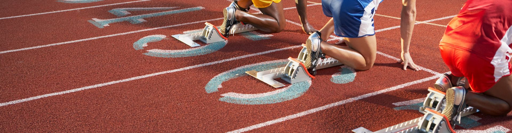
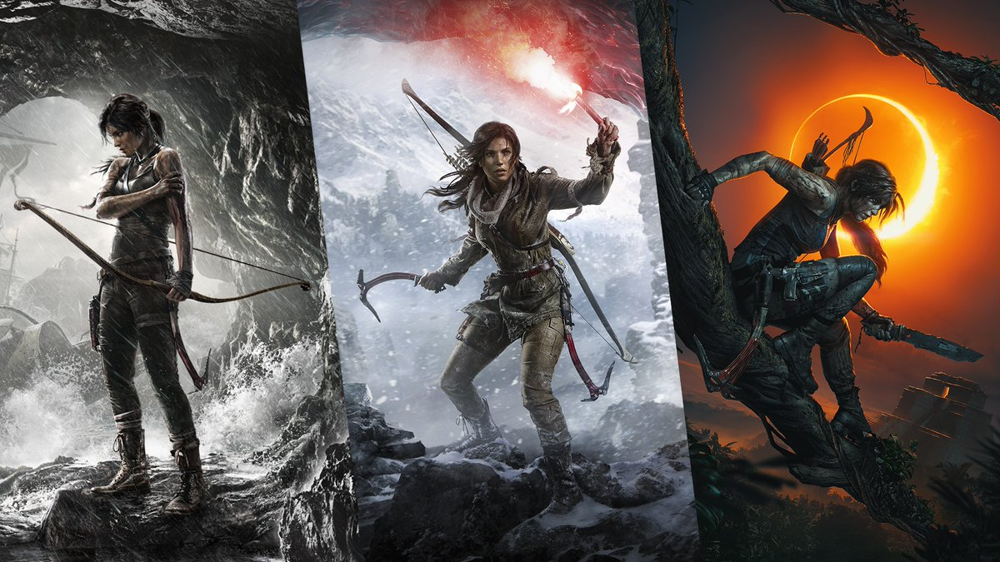
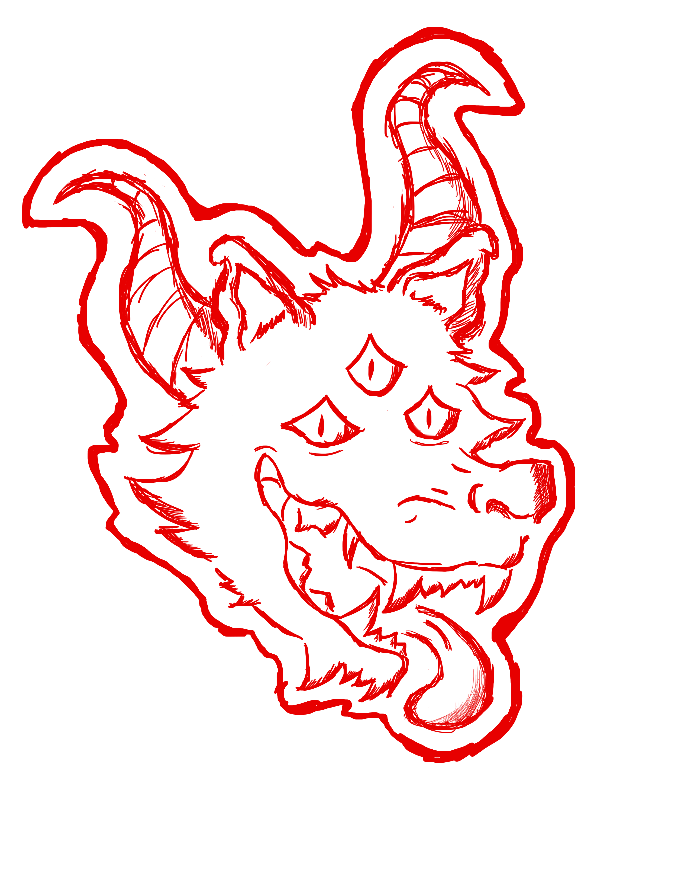

EJERCICIO
Desde pequeña me gustaron los deportes, participé en la escuela en varios torneos, de atletismo, salto de longitud, lanzamiento de bala, voleibo. Despues de la preparatoria ya no pude continuar con algun equipo en la universidad, ya que me lesioné y eso me de alguna forma de frenó en todo eso. Así que hoy en día solo hago ejercicio por salud fisica y mental.
VIDEOJUEGOS
De misma manera, los videojuegos han sido parte de mi vida desde pequeña, Suelo jugar de todo, peo mis favoritos son: Crash Bandicoot, Tomb Raider, Assassins Creed, Fortnite y Overwatch
DIBUJAR
Desde que era pequeña me ha encantado dibujar, me gusta dibujar cualquier cosa en mis libretas y pasarlas a digital,me relaja bastante.
Twitch
Tuve una época de ser streamer, me gustaba bastante, lo he dejado un tiempo, pero quisiera volver a ese mundo, es bonito.